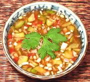

|
Thai Cucumber SauceThailand | ||||
| Makes: Effort: Sched: DoAhead: |
2-2/3 cups ** 1-1/2 hrs Best |
A light dipping sauce often used with sa-teh, fish cakes and the like. See also Cucumber Salad #2 for an alternative. | |||
|
1 3 3 ---- 1 3 1/3 1 ---- |
# oz --- c T c t ---- |
Cucumbers (1) Red Chili (2) Shallot -- Dressing Water Palm Sugar (3) Rice Vinegar Salt -- Garnish Cilantro sprigs |
Make (1-1/2 hr, 20 min work)
|